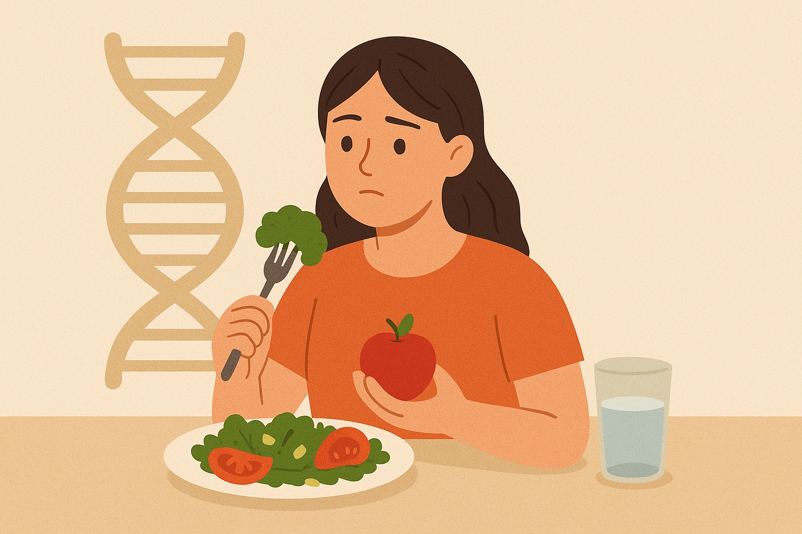
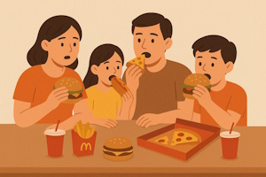

Плохие пищевые привычки

Генетика и необходимость правильного питания
Многие люди при поднятии темы об ограничении вредных привычек рассуждают так:
Лучше жить коротко и на всю катушку, чем долго и скучно.
Знаю деда, который всю жизнь пил и курил и дожил до 100 лет. И знаю спортсменов, которые померли в 21. Это всё от генетики зависит, а не от привычек.
Действительно, врожденное здоровье каждого человека индивидуально.
У одних людей с рождения есть паталогии развития, влияющие на разные органы, например на почки, печень, поджелудочную.
А у других наоборот какие-либо органы имеют усиленную встроенную защиту и выносливость за счет их особенных генов.
Каждый человек по умолчанию считает себя здоровым только лишь потому, что у него на данный момент ничего не болит.
И таковым он считает себя до тех пор, пока не обнаружится какая-то проблема, которая на этот момент уже может стать хронической.
Неправильное питание со временем вредит даже здоровым людям, не говоря уже о тех, кто имеет врожденные предрасположенности.
Поэтому распространенное мнение о том, что здоровым людям можно есть всё что угодно не верно и опасно.
Вредные семейные привычки

Мнение человека о том что есть "нормально", а что нет исходят из детства.
В семьях часто 2 или 3 раза в день:
- готовят жареные блюда и полуфабрикаты, когда хронически не хватает времени или сил.
- едят только мясо и крупы, игнорируя фрукты и овощи, если очень мало денег.
- заедают стресс сладкими или вредными продуктами (печенье, колбаса и т.д.)
- употребляют много соли и жира
Самое страшное то, что человек может чувствовать себя на такой диете нормально на протяжении 10 или даже 20 лет.
И из-за этого считать, что ему это не приносит никакого вреда, в то же время медленно и навсегда ухудшая себе здоровье.
Представьте что же происходит с теми людьми, которые имеют несколько из этих привычек или же все сразу.
Последствия вредных пищевых привычек
Основные проблемы питания: